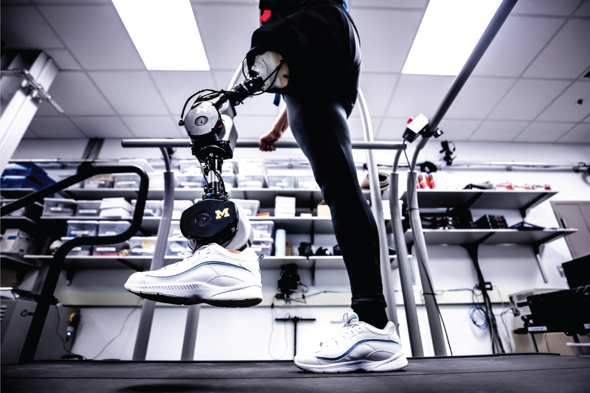

Project Lead
Led from IIT Jodhpur.
WeRoCon is headed within the Department of Electrical Engineering, IIT Jodhpur.

Head, WeRoCon
Dr. Saurav Kumar
Assistant Professor, Department of Electrical Engineering — IIT Jodhpur
WeRoCon builds an EMG-driven, motor-actuated transtibial prosthesis — fusing inertial sensing, closed-loop motor control, and a custom mechanical linkage into a single wearable system designed at IIT Jodhpur.

The prosthesis is built as three independently documented modules. Each runs its own setup guide, firmware, and test procedures — and together they close the loop from sensing to motion.
Raspberry Pi 5 reads orientation, acceleration, and angular velocity from an MPU6250 over I2C — the gait-phase signal the rest of the system reacts to. Includes full OS flashing and wiring guide.
Open setup guide In Progress MODULE 02 // ACTUATIONClosed-loop control of the ankle actuator — translating gait-phase estimates from the IMU into torque and position commands for the drive motor in real time.
View module In Progress MODULE 03 // STRUCTUREThe frame, linkage, and foot assembly that carry load through the gait cycle — designed for the actuator's torque profile and the wearer's range of motion.
View moduleWeRoCon is headed within the Department of Electrical Engineering, IIT Jodhpur.
Assistant Professor, Department of Electrical Engineering — IIT Jodhpur